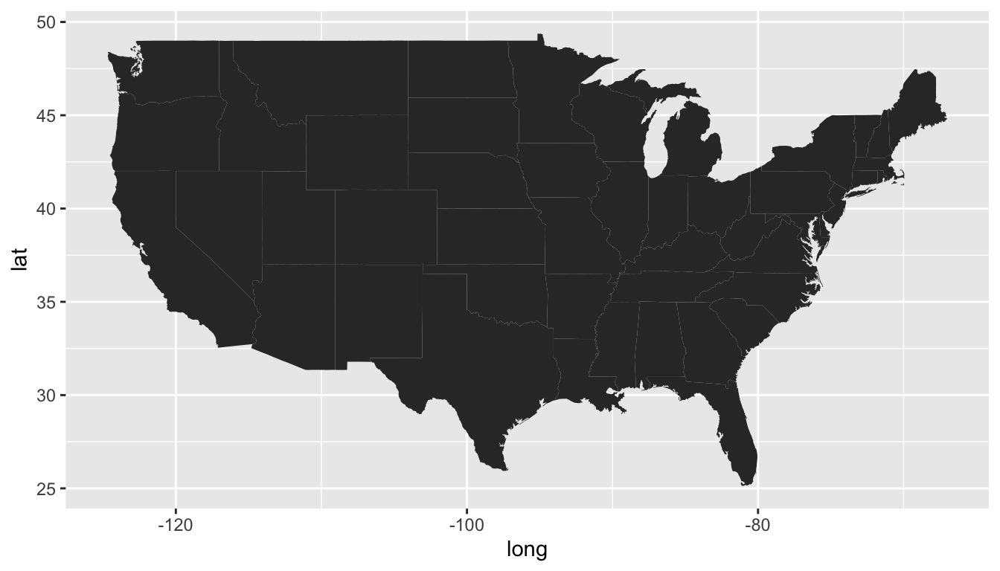
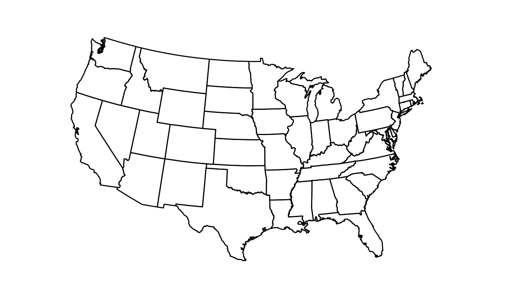
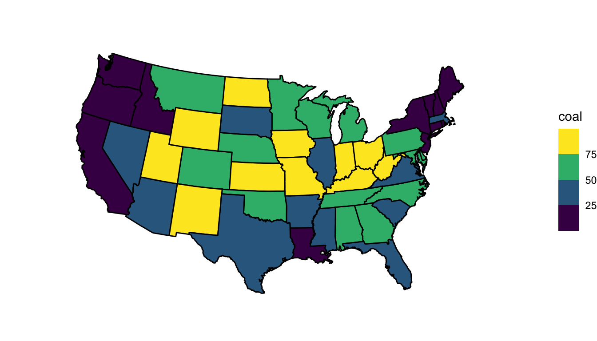
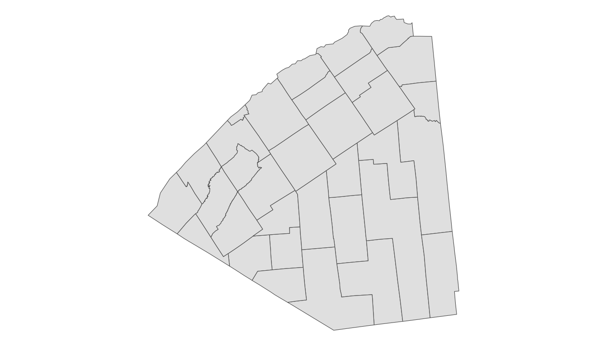
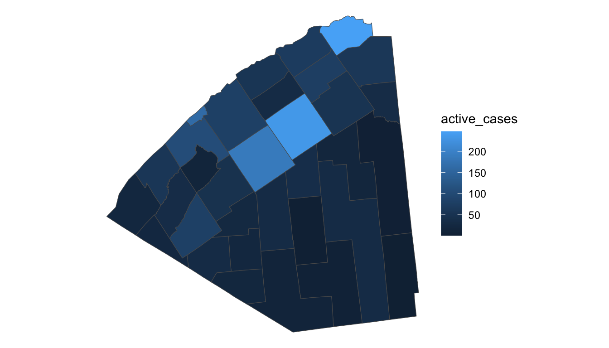

6 Mapping Data
Creating maps is an important data visualization technique when we want to visualize patterns across space. In this section, we will examine when maps are useful (and when they are not). We will also construct maps in R that are either already built in base R or an R package and maps that we will have to specify with a shapefile.
6.1 Mapping Introduction (Class Prep)
6.1.1 Do We Need a Map?
Just because your data is spatial does not mean the best way to display the data is a map.
This is the most important take-away from this subsection. Section 7.5 of the data visualization textbook that we used to help conceptualize data visualization principles has a great section on this. Read this section. There are two exercises that are given after the following “Mapping Common Areas” subsection pertaining to this reading.
6.1.2 Mapping Common Areas
In order to create a map of some area, we need some way to tell R how to draw the boundaries for that area. This may seem trivial, but, in many cases, it isn’t because boundaries in maps are often complex. Think of the state boundaries in the United States: some boundaries are straight lines, while others are much more complex. Some areas, like the United States, are commonly mapped by many data scientists. The maps package contains pre-“drawn” maps for many of these areas. We can see in (this link that some of these areas include a map of the world, a map of lakes, a map of france, a map of us.cities, and a map of the state data in the United States.
The map_data() function returns a data.frame object, but this data frame has many observations (15537) instead of just 50. Why? Because it contains all of the information necessary for R to draw the polygonal shapes of each state. Variables in the data frame include
-
longandlat, latitude and longitude -
group, one number for each polygonRmust draw -
order, the order thatRwill draw the line segments within a group to form the polygon -
region, the name of the state
To have R actually draw the map, we just need a new geom: geom_polygon() and a group aes() to tell R how to draw the boundaries:
ggplot(data = state_df,
mapping = aes(x = long, y = lat,
group = group)) +
geom_polygon() 
You may notice some not-so-great things about our default map. The aspect ratio seems off, the states are already filled in as black, and the plot has unnecessary gridlines.
The following is code to “fix” some issues with the initial map of the United States. The theme_void() theme gets rid of the axis gridlines, axis ticks, and axis text. The colour and fill arguments to geom_polygon() give states a black outline colour and a fill of white. The most novel part of the code is the coord_map() function. This lets us specify a particular projection to use.
ggplot(data = state_df,
mapping = aes(x = long, y = lat,
group = group)) +
geom_polygon(colour = "black", fill = "white") +
coord_map(projection = "albers", lat0 = 39, lat1 = 45) +
theme_void()
We unfortunately do not have time to talk about map projection in detail, but, this is an area you would want to read more about if your final project involves mapping of some kind. Or, if you are interested, you can read more about projections at these two links: https://medium.com/nightingale/understanding-map-projections-8b23ecbd2a2f or https://mdsr-book.github.io/mdsr2e/ch-spatial.html#sec:projections.
Now that we’ve created a base map, we probably want to add a variable to fill by to examine patterns across the states. The resulting map is sometimes called a “choropleth” map. We will use the state_stats data set from the usdata package.
## install.packages("usdata")
library(usdata)
state_stats
#> # A tibble: 51 × 24
#> state abbr fips pop2010 pop2000 homeownership multiunit income med_income
#> <fct> <fct> <dbl> <dbl> <dbl> <dbl> <dbl> <dbl> <dbl>
#> 1 Alab… AL 1 4.78e6 4.45e6 71.1 15.5 22984 42081
#> 2 Alas… AK 2 7.10e5 6.27e5 64.7 24.6 30726 66521
#> 3 Ariz… AZ 4 6.39e6 5.13e6 67.4 20.7 25680 50448
#> 4 Arka… AR 5 2.92e6 2.67e6 67.7 15.2 21274 39267
#> 5 Cali… CA 6 3.73e7 3.39e7 57.4 30.7 29188 60883
#> 6 Colo… CO 8 5.03e6 4.30e6 67.6 25.6 30151 56456
#> # ℹ 45 more rows
#> # ℹ 15 more variables: poverty <dbl>, fed_spend <dbl>, land_area <dbl>,
#> # smoke <dbl>, murder <dbl>, robbery <dbl>, agg_assault <dbl>,
#> # larceny <dbl>, motor_theft <dbl>, soc_sec <dbl>, nuclear <dbl>,
#> # coal <dbl>, tr_deaths <dbl>, tr_deaths_no_alc <dbl>, unempl <dbl>You can read about each of the variables with ?state_stats.
There really is not too much new information here: we use the dplyr join functions to combine the two data frames. We then often simply use a fill aes() within geom_polygon() to fill by the variable of interest and scale_fill_viridis() to change the fill scale.
state_stats <- state_stats |> mutate(state = str_to_lower(state))
state_full <- left_join(state_df, state_stats, by = c("region" = "state"))
ggplot(data = state_full, aes(x = long, y = lat, group = group)) +
geom_polygon(colour = "black", aes(fill = coal)) +
coord_map(projection = "albers", lat0 = 39, lat1 = 45) +
theme_void() +
scale_fill_viridis_b()
Exercise 1. The reading gave one example where the “best” graph to show woud not be a map. Think of a second example where, even though the data is spatial, the best graph to make a particular argument would not be a map.
Exercise 2. Refer back the United States examples that we completed. Choose a variable or two variables where a map makes the most sense to visualize that variable and explain your reasoning. Then, choose a variable or two variables where you might make a plot other than a map and explain your reasoning for why the map makes less sense for this variable.
Exercise 3. Which states had the fastest growth rate between 2000 and 2010? Make a variable for the percent change in population and then map this variable.
Exercise 4. To your map in Exercise 1, think about which type of colour scale makes the most sense to use (sequential, diverging, or unordered). Change the colour scale to match what makes the most sense.
You may have noticed a couple of additional problems in the United States maps we made in the previous section.
We ignored Alaska and Hawaii. Putting these on the map in their geographic locations would result in a tiny continental United States map that would be harder to read.
Some states in the Northeast are so small that their
fillvalues are hard to read.
Both of these issues can be challenging to address. It is common to put Hawaii and Alaska in a corner of the plot, even though their latitude and longitude values do not match. Sometimes Alaska is made to be smaller than its true size as well. The smaller Northeastern states is a more challenging problem. This is beyond the time we have to devote to maps in this course, but a hexbin map can help with both of these issues.
6.2 Mapping Other Areas: sf Objects
The built-in R map data and the data from the maps package is really nice for mapping common areas like the world and the United States. However, sometimes we may want to construct a map that does not have a corresponding data set in base R or maps. Most commonly, we use an sf object for this purpose. In this section, we will construct a map of the Covid cases in St. Lawrence county, borrowing some code and data from Dr. Ramler.
Before we deal with the map, let’s first modify a data set provided by Dr. Ramler that has active and total numbers of Covid cases in St. Lawrence County (SLC). The description of the code is omitted but almost everything is something you would have seen in STAT/DATA 234.
active <- read_csv("https://raw.githubusercontent.com/iramler/stlawu_covid/main/slc_towns_active_cases.csv", n_max = 34)
tcases <- read_csv("https://raw.githubusercontent.com/iramler/stlawu_covid/main/slc_towns_total_cases.csv", n_max = 34)
active_long <- active |> pivot_longer(5:ncol(active), names_to = "date",
values_to = "cases")
## repeat for total cases
tcases_long <- tcases |> pivot_longer(5:ncol(tcases), names_to = "date",
values_to = "cases")
library(lubridate)
covid_df <- left_join(tcases_long, active_long,
by = c("date", "Order", "NAME")) |>
mutate(date = mdy(date)) |>
rename(total_cases = cases.x,
active_cases = cases.y) |>
mutate(total_cases = if_else(is.na(total_cases),
true = 0, false = total_cases),
active_cases = if_else(is.na(active_cases),
true = 0, false = active_cases))
covid_SLC <- covid_df |> filter(NAME == "St. Lawrence County")
covid_sub <- covid_df |> filter(NAME != "St. Lawrence County")We now have two data frames, covid_SLC, which contains cases for St. Lawrence County as a whole, and covid_sub, which has some information on Covid cases in the various sub-regions of SLC. Important variables include:
-
NAME, the name of the county sub-area, -
Population.x, the county population, -
date, the date -
total_cases, the total number of cases -
active_cases, the number of active cases
There is plenty we can do with this data set without mapping.
Exercise 1. Make a line plot that shows the number of active_cases in all of St. Lawrence County over time.
But suppose that we now want to make a map of the current day’s active cases in the subregions of SLC like the maps found here . We need to tell R how to draw the lines that define the different subregions of SLC. To do so, we need to provide R with a shapefile that has directions on how to draw the spatial polygons.
How can we obtain this shapefile? There are two primary methods:
Through GIS. You can export a shapefile for a particular region using GIS software, something I am not that familiar with. But, Carol Cady at SLU has GIS expertise.
Searching the Internet. In this case, Dr. Ramler found a shape file for the subregions of all counties in New York at this website. He and Caroline Krall, a student, then had to subset the data there to only contain information for the subregions in St. Lawrence County.
A shapefile typically has an extension of .shp. It needs to be accompanied by three other “helper” files: a .dbf file, a prj file, and a shx file.
The most popular package to work with shapefiles is the sf package, which stands for simple features.
## install.packages("sf")
library(sf)
shp <- read_sf("data/SLC_Civil_Boundaries_SHP/slc.shp") |>
st_transform(st_crs("+proj=longlat"))Note that we need to supply a coordinate reference system (CRS) with the st_crs() function to change the coordinates to latitude/longitude.
The object shp is a simple features object and contains not only the data but also the information R needs to draw the polygons. We can run str(shp) to examine its structure. We can also construct a map by using a geom particular to sf objects: geom_sf():
ggplot(data = shp) +
geom_sf() +
theme_void()
Finally, we need to use our joining functions to combine the data from shp with the covid data from covid_sub. sf are the most popular objects to store spatial information because they are mostly compatible with the tidyverse functions we already know and love. So, a left_join() does the trick here:
We then make a plot with:
ggplot(data = full_df) +
geom_sf(aes(fill = active_cases)) +
theme_void()
Exercise 2. Change the fill scale of the plot. Should you use an unordered, sequential, or diverging scale?
Exercise 3. Change the colour scale so that active_cases are put into different bins with scale_fill_viridis_b(). What are some advantages and disadvantages of this?
Exercise 4. Explore the ?geom_sf_text() function and add the actual number of cases to the subregions in the plot, as is done on the SLC website.
6.3 Your Turn
Consider again the Happy Planet Index data. Recall that the basic idea of a “happy planet index” is that it should be a metric that computes how happy and healthy a country’s citizens are, but adjusts that by that country’s ecological footprint (how much “damage” the country does to planet Earth). Variables in the data set are:
-
HPIRank, the rank of the country’s Happy Planet Index (lower is better) -
Country, the name of the country -
LifeExpectancy, the average life expectancy of a citizen (in years) -
Wellbeing, the average well being score (on a scale from 1 - 10). -
HappyLifeYears, a combination of LifeExpectancy and Wellbeing -
Footprint, the ecological footprint per person (higher footprint means the average person in the country is less ecologically friendly) -
Population, the population size of the country -
GDPcapita, the Gross Domestic Product per population -
Region, the region the country is in
Exericse 1. Make a map of a variable of your choosing. In coord_map(), use projection = "mercator", which is also the default (we will see in a later exercise that this probably is not the best choice).
Hint: in ggplot2’s map_data() function, there is a built in map of the "world".
Hint: You can read more about projections in Section 17.3.2 of Modern Data Science with R
Exercise 2. You may notice that the United States does not get coloured in your map. Examine this issue further and fix the map so that the United States is coloured.
Exercise 3. You may have noticed that there are two horizontal stripes across your map. This is an issue that drove me nuts! Check out this submitted issue on ggplot2’s GitHub page for the reason for the error as well as a fix. Use it to fix your plot.
Exercise 4. Read about Mercator projections in this blog post. What does this source say about the sizes of Greenland vs. Africa in a Mercator projection.
Exercise 5. Examine all of the different options for map projection with ?mapproject. Then, change the projection to "globular". Change the projection again to "gilbert". How does the relative size of Greenland to Africa change in the projections?
You can read more about projections in R at this site. There’s definitely a lot going on, and you should always consider what map projection you are using when mapping data, especially if that data is on a global scale!